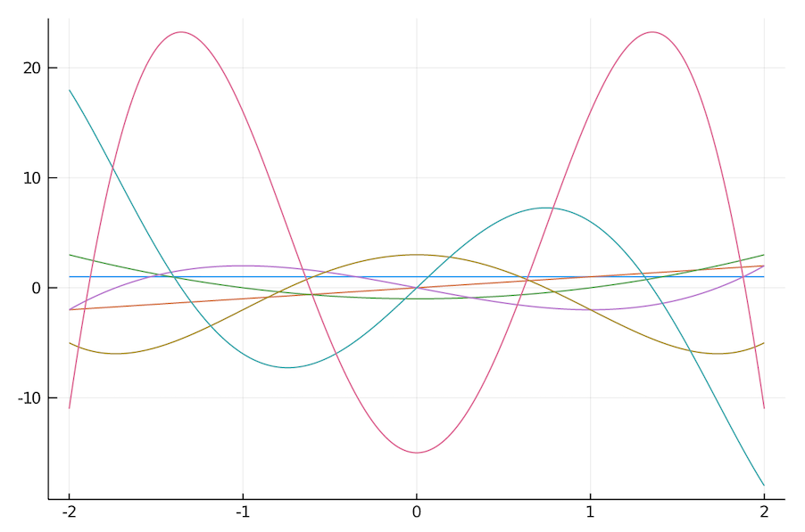
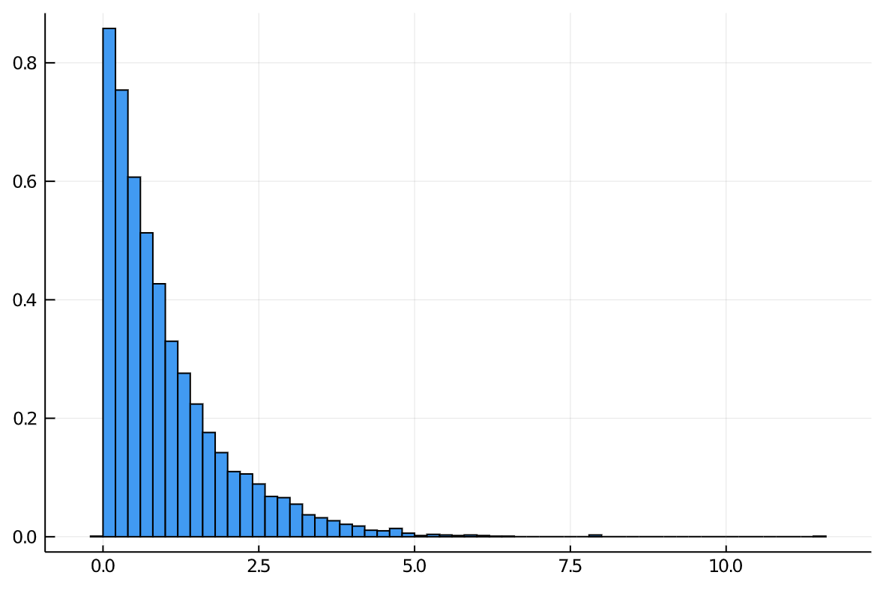

Polynomial Chaos
(The Julia code for this blog is available in my GitHub notebooks repo and online here.)
This talk appeared recently in my YouTube recommendations and with a title like “Polynomial Chaos” I had to take a look. This is a summary of what I learnt mainly to help my own understanding.
Polynomial Chaos Expansion (aka PCE, also known as Wiener Chaos Expansion.) was a technique introduced just before the second world war by Norbert Wiener. The use of the word chaos is different from the way we understand it today and seems to come from its application to the statistical study of white noise.
In a very similar way to how the Fourier and Laplace transforms are related to the exponential functions, there are strong relationships between certain probability distributions and corresponding families1 of orthogonal polynomials.
1 Catalogued in the Wiener-Askey scheme.

Also like the Fourier and Laplace versions, the transformed version of the distribution has many useful properties which can be used for similar purposes, like approximation and solving differential equations.
In these notes, and following closely the talk mentioned above, I’ll try and describe how you might approximate a general probability distributions using this technique.
Polynomial chaos extends from the fact2 that any stochastic variable (within reason) can be transformed into a system of orthogonal polynomials: \(X = \sum_{i=0}^\infty X_i \phi_i(\zeta)\).
2 The Kosambi–Karhunen–Loève theorem states that a stochastic process can be represented as an infinite linear combination of orthogonal functions, analogous to a Fourier series representation of a function on a bounded interval.
If the polynomials are chosen correctly then they can represent certain probability distributions very compactly. For example, for a normally distributed random variable the polynomials are Hermite polynomials, \(\phi_i(\zeta) \equiv H_i(\zeta)\), and the transformed random variable can be written \(X = \mu H_0(\zeta) + \sigma H_1(\zeta) = \mu + \sigma \zeta\), where \(\mu\) and \(\sigma\) are the mean and standard deviation respectively, which makes sense.
The relationship between the distribution and the polynomials can be seen most clearly in the definition of the inner product of the polynomials themselves. In this case the Hermite polynomial inner product is defined like this:
\[ \langle H_i(\zeta)\, H_j(\zeta) \rangle = \int_{-\infty}^\infty H_i(\zeta) H_j(\zeta) \color{red}{e^{-\frac{\zeta^2}{2}}}\, d\zeta = \color{red}{\sqrt{2\pi}} i! \delta_{ij}\]
The elements in \(\color{red}{red}\) being both the weighting function for the product and the distribution itself.
We want to approximate a general probability distribution, \(F(k)\) by expanding in terms of a chosen set of polynomials belonging to another distribution, say \(G(\zeta)\). To do this the trick is to transform both \(F(k)\) and \(G(\zeta)\) into the same, uniform distribution using an inverse transformation of both:
\[k = F^{-1}(u) \stackrel{\small{\textrm{def}}}{=} h(u)\]
\[\zeta = G^{-1}(u) \stackrel{\small{\textrm{def}}}{=} l(u)\]
Then use the Galerkin projection to compute the individual coefficients:
\[k_i = \frac{\langle k H_i(\zeta) \rangle}{\langle H_i^2(\zeta) \rangle} = \frac{1}{\langle H_i^2 \rangle} \int_{-\infty}^\infty k H_i(\zeta) e^{-\frac{\zeta^2}{2}}\, d\zeta = \frac{1}{\langle H_i^2 \rangle}\int_0^1 h(u) H_i(l(u))\, du \]
All this is verbatim from the talk. I also planned to transcribe her code (to Julia of course) but I found a better plan.
Dealing with the polynomials from scratch is pretty tedious so I looked for a package that would do it for me. As it turns out there is a Julia package called PolyChaos which does most of this. Looking through the documentation I didn’t see this actual use case so I did it myself.
Using the PolyChaos package we can easily define our Hermite polynomials. In PolyChaos they are called GaussOrthPoly3:

3 The name Hermite is used for the variant of the Hermite polynomials used by physicists. I remember they appear as part of the study of the quantum linear harmonic oscillator which I studied in university.
using PolyChaos
op_gauss = GaussOrthoPoly(20)
H(i,x) = evaluate(i, x, op_gauss)We also compute the inner (scalar) products, \(\langle H_i^2(\zeta) \rangle\) for our polynomials, PolyChaos conveniently does this for us:
sp = computeSP2(op_gauss)Then we define our inverse functions for testing:
using Distributions
inv_cdf(dist) = u -> quantile(dist, u)
h = inv_cdf(Exponential())
l = inv_cdf(Normal())
integrand(i) = u -> h(u)*H(i, l(u))In this case the distribution we want to approximate if the Exponential distribution, h, and is defined as a partial function. The Gassian we will approximate it with is defined as the partial function l. Finally de define our integrand in terms of h(u), H and l(u), for a particular index, i.
Now we perform the integration, for which PolyChaos also has us covered.
int_op = Uniform01OrthoPoly(1000, addQuadrature=true)We’ll truncate the approximation to p polynomials:
p = 21
ki = [integrate(integrand(i-1), int_op) / sp[i] for i in 1:p]Then we can reconstitute the approximated distribution using 5000 Gaussian random variables, \(\zeta_i\):
ζ = randn(5000)
Σ = zeros(5000)
for i in 1:p
Σ += ki[i] * H(i-1,ζ)
end
histogram(Σ, normed=true)
With this same code we can now approximate any distribution using random variables drawn from a more manageable distribution of our choice. This would allow us to perform other transformations or analysis which may have been difficult in the original form. It may also be a faster alternative to sampling techniques, like Monte Carlo variants.